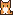

Calculadoras de ingeniería
Caudal en tuberías con unidades configurables, ecuación en LaTeX y gráfica interactiva con límites de velocidad.
#hidráulica #calculadora
Herramientas de ingeniería, proyectos personales y una gatita llamada Darwin.

Herramientas y experimentos publicados en este sitio.
Caudal en tuberías con unidades configurables, ecuación en LaTeX y gráfica interactiva con límites de velocidad.
#hidráulica #calculadora
Proveedores, productos y cotizaciones de piezas y servicios de agua potable. Requiere usuario y contraseña; los datos se publican cifrados.
#agua-potable #cotizaciones
Los 54 libros de los manuales técnicos de la Conagua para agua potable, alcantarillado y saneamiento, convertidos de PDF a HTML para leerlos y buscarlos en el navegador.
#agua-potable #normativa #biblioteca